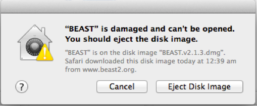
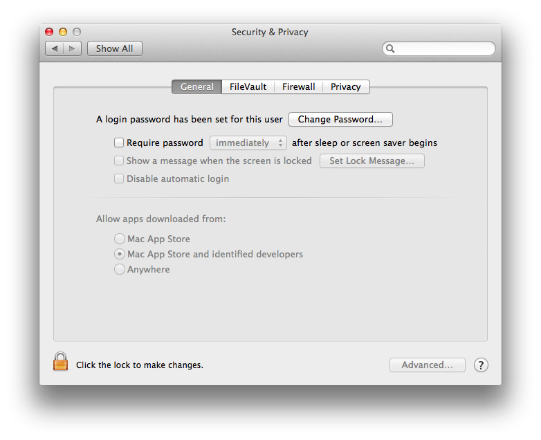
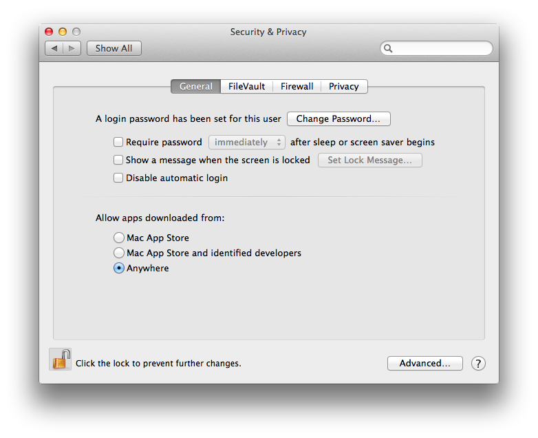
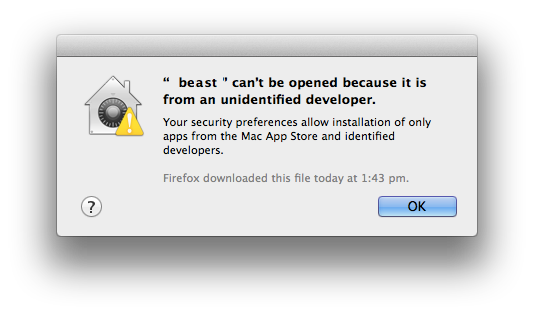
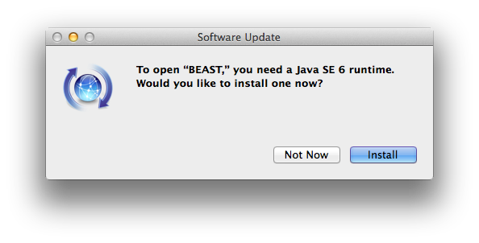

11 August 2014 by Remco Bouckaert
Just this week I got a new Mac laptop, and could experience first hand what it is to install BEAST on a virgin machine. There are number of reasons why BEAST will not start on Apple OSX, and we have a look at the most common causes and how to solve them.
First of all, after downloading BEAST and OSX may respond to opening the dmg file by showing a dialog with the message that the file is damaged and offers a choice of deleting or canceling the action.

By default, security settings on Mavericks is that only apps downloaded from Mac App Store and from identified developers are opened, and anything else is treated with the message shown above. To fix this, open the security and privacy settings — click the apple icon in the top left corner, then click System Preferences, and select Security & Privacy. A window similar to this will be shown:

You need to change that to allow apps from anywhere. Once you click that, a window pops up asking whether you want to make your computer less secure. No worries — after starting BEAST once, you can set it back to a more secure setting.

Another message that can pop up is that BEAST or BEAUti cannot be opened — something similar to this

(Had to doctor this screenshot a bit to show beast instead of the app I started). Again, change the security settings (temporarily) to allow applications from anywhere, as outlined above.
Now the dmg file should open and you can drag BEAST to the Applications folder. Double clicking BEAUti or BEAST may result in a message asking you to install Java 6. This may seem strange if you already have Java 7 or higher installed.

It does not change your default Java installation if you click ‘install’ — Java 6 will be installed next to Java 7 or 8, but will not become the default for command line usage.
(you may want to create a symbolic link to trick OSX in thinking Java 6 is already installed if you already have Java 7 — details here).
When you run BEAST or BEAUti from the command line, you can be confronted by a somewhat mysterious message like this:
{% highlight ruby %}Exception in thread "main" java.lang.UnsupportedClassVersionError: beast/app/beauti/Beauti : Unsupported major.minor version 52.0{% endhighlight %}BEAST v2.1.x requires Java 6 and v2.2.x requires Java 8. It is possible that you do not have the correct version of Java installed. To test which version you have, in a terminal use “java -version”, which should display something like this:
{% highlight ruby %}~> java -version java version "1.8.0_11" Java(TM) SE Runtime Environment (build 1.8.0_11-b12) Java HotSpot(TM) 64-Bit Server VM (build 25.11-b03, mixed mode){% endhighlight %}(~> is the command prompt, and should not be typed. Anything with out ~> is output to screen.) If you do not have the correct Java version installed, you can do so from java.com or for Java 8 oracle. It is possible that you have more than one version of Java installed, and that the default version happens to be an older version. To change the default version is a bit fiddly, but can be done from a terminal by changing a symbolic link in /System/Library/Frameworks/JavaVM.framework/Versions/ like so:
{% highlight ruby %}~> cd /System/Library/Frameworks/JavaVM.framework/Versions/ ~> ls CurrentJDK{% endhighlight %}If it shows something else, e.g., Current replace CurrentJDK with the name of that link.
{% highlight ruby %}~> rm CurrentJDK ~> ls /Library/Java/JavaVirtualMachines/ jdk1.7.0_21.jdk jdk1.8.0_11.jdk{% endhighlight %}Now, just select one of the Java versions, say jdk1.8.0_11.jdk and add the link
{% highlight ruby %}~> ln -s /Library/Java/JavaVirtualMachines/jdk1.8.0_11.jdk/Contents/ CurrentJDK{% endhighlight %}Don’t forget to replace CurrentJDK with Current if that is what you had before.
BEAGLE is a library for performing Felsenstein’s peeling algorithm much more efficiently than can be done in Java. To install it for Mac is straightforward, but sometimes it does not work. One of the reasons is that the BEAGLE installer makes it easy to let you install CUDA as well. The CUDA library is useful only when you have an NVIDA graphics card. Most Macs that I’ve seen do not have an NVIDIA card, and on these machines you can see errors similar to this:
{% highlight ruby %}CUDA error: "Driver not initialized" from fileWhat you need to do is uninstall the CUDA driver — reinstalling the BEAGLE library may be helpful as well.
Uninstalling CUDA drivers is a bit of a mission, since files go in a number of places, and there is no uninstaller. What should work is to delete all of the following files
{% highlight ruby %}/Library/Frameworks/CUDA.framework /Library/LaunchAgents/com.nvidia.CUDASoftwareUpdate.plist /Library/PreferencePanes/CUDA Preferences.prefPane /System/Library/Extensions/CUDA /System/Library/StartupItems/CUDA /usr/local/cuda/lib/libcuda.dylib{% endhighlight %}then reboot, and CUDA should be uninstalled.
BEAST packages typically come with usefule examples and documentation. On OSX, packages are stored in ~/Library/Application Support/BEAST/2.1/ and each package has its own directory with the name of the package. The OSX Finder does not show the ~/Library folder by default. To open the folder, click the Go-item in the menu bar, then hit the alt-key. Now ‘Library’ appears under the Go-menu. Select the Library-item and a new folder opens from where you can browse to the BEAST package.